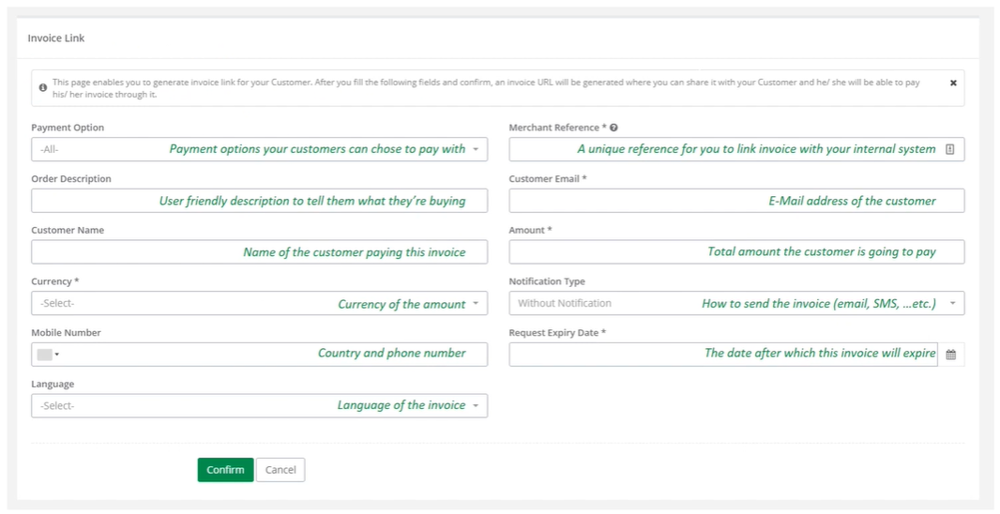
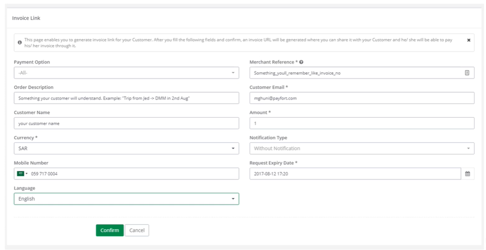
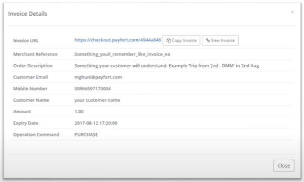

Invoice generation (BackOffice)
You can also generate invoice through the PayFORT BackOffice portal.
Please follow the steps to generate invoice through
- Login to your PayFORT back office account.
- From the side menu click on invoices and then on Generate invoices.

- A new invoice form would open as shown below 
- Create new invoice similar to the sample shown here 
- Success message will be displayed with the information you just entered and a button to copy the invoice link to send. 
- Here is the sample invoice generate at the back office

- When invoice has been paid you will get the screen as shown here

- You can also generate and download reports of all the invoices from Invoice Management as shown here

​ Please visit the following video tutorial to further understand the process.
Go to Full API
Check out our full API by visiting this link
Need further help?
Thanks for using PayFort.com. If you need any help or support, then message our support team at support@payfort.com.